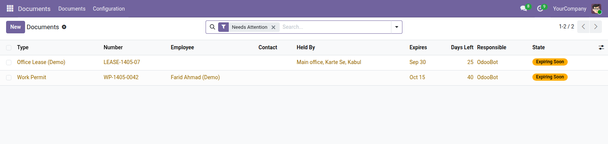

<section style="padding:32px 0;font-family:Roboto,Helvetica,Arial,sans-serif;color:#2b3a34;">
  <div style="max-width:900px;margin:0 auto;padding:0 24px;">

    <p style="font-size:12px;letter-spacing:.14em;text-transform:uppercase;color:#0b6b57;font-weight:600;margin:0 0 10px;">Productivity</p>
    <h1 style="font-size:40px;line-height:1.1;margin:0 0 14px;font-weight:700;">Expiring Documents</h1>
    <p style="font-size:19px;line-height:1.55;color:#4c5a55;max-width:640px;margin:0 0 28px;">Licences, permits, visas, insurance, vehicle registrations, professional certifications — tracked in one place, with a reminder that reaches a person before the thing lapses.</p>

    <div style="background:#f6f7f5;border-left:3px solid #0b6b57;padding:18px 22px;margin:0 0 32px;font-size:16px;line-height:1.6;"><strong>Most organisations track these in a spreadsheet.</strong> And nobody opens it until something has already expired. A reminder that depends on somebody remembering to look is not a reminder.</div>

    <div style="margin:0 0 34px;">
      
      <div style="font-size:13px;color:#75837d;padding-top:8px;">Everything with an expiry date, in one list</div>
    </div>

    <h2 style="font-size:24px;margin:0 0 16px;font-weight:600;">One model, not six</h2>
    <p style="font-size:16px;line-height:1.65;color:#4c5a55;margin:0 0 14px;">A work permit and a vehicle registration are the same shape: a number, a holder, an issue date, an expiry date and somebody responsible. Six near-identical models would have been six places to fix the same bug.</p>
    <p style="font-size:16px;line-height:1.65;color:#4c5a55;margin:0 0 30px;">Document types carry the differences — how long this kind of document is normally valid, how much notice you want, and whether it even has a number. A passport has one; a signed undertaking may not.</p>

    <h2 style="font-size:24px;margin:0 0 16px;font-weight:600;">Reminders that reach a person</h2>
    <ul style="font-size:16px;line-height:1.7;color:#4c5a55;margin:0 0 30px;padding-left:20px;">
      <li><strong>An ordinary Odoo activity</strong> — for whoever is named responsible, so it appears where they already work</li>
      <li><strong>Once, not every morning</strong> — a reminder that repeats daily is a reminder people learn to ignore</li>
      <li><strong>Named responsibility</strong> — a document nobody owns is a document nobody renews</li>
    </ul>

    <h2 style="font-size:24px;margin:0 0 16px;font-weight:600;">Renewal keeps the history</h2>
    <p style="font-size:16px;line-height:1.65;color:#4c5a55;margin:0 0 30px;">Renewing opens a replacement carrying the details over, closes the old document and links the two — so the chain of a licence over ten years stays intact and searchable, rather than being one record overwritten nine times.</p>

    <h2 style="font-size:24px;margin:0 0 16px;font-weight:600;">Status you can search</h2>
    <table style="width:100%;border-collapse:collapse;margin:0 0 30px;font-size:15px;">
      <thead><tr style="background:#edf0ec;">
        <th style="text-align:left;padding:10px 14px;border-bottom:1px solid #dce1db;">Status</th>
        <th style="text-align:left;padding:10px 14px;border-bottom:1px solid #dce1db;">Set by</th>
      </tr></thead>
      <tbody>
        <tr><td style="padding:9px 14px;border-bottom:1px solid #eef1ed;">Valid, expiring, expired</td><td style="padding:9px 14px;border-bottom:1px solid #eef1ed;">the dates, refreshed by the daily job</td></tr>
        <tr><td style="padding:9px 14px;border-bottom:1px solid #eef1ed;">Renewed</td><td style="padding:9px 14px;border-bottom:1px solid #eef1ed;">by hand, when a replacement is issued</td></tr>
        <tr><td style="padding:9px 14px;border-bottom:1px solid #eef1ed;">Cancelled</td><td style="padding:9px 14px;border-bottom:1px solid #eef1ed;">by hand, when a document is withdrawn</td></tr>
      </tbody>
    </table>

    <h2 style="font-size:24px;margin:0 0 16px;font-weight:600;">Why the status is stored rather than computed</h2>
    <p style="font-size:16px;line-height:1.65;color:#4c5a55;margin:0 0 30px;">It depends on today. A computed field is calculated when the record is read, which means it cannot be searched or grouped — and a list of everything expiring this month is the entire reason for the module. So it is stored, and a daily job keeps it honest.</p>

    <div style="border-top:1px solid #dce1db;padding-top:20px;font-size:14px;color:#75837d;">Odoo 19.0 Community · depends on <code>mail</code> only. <code>af_liaison</code> builds the Afghan visa and permit types on top of it.</div>

  </div>
</section>
